Player Vs player inspire gamer communities by connecting people to interactive events also Listening to the customers and tuning the product according to their needs.
Project Brief
The Challenge
The video gaming industry is a 34-Billion-dollar industry worldwide. Gaming Conventions entice thousands of gamers and spectators to experience, watch and play games, view new technology and watch teams and individuals compete in a variety of game categories for prizes and notoriety.
I will create the desktop application to attract and engage a large audience and also create mobile apps version for users to use while at the actual event.
The Problem in Detail
Game Convention Sponsors & exhibitors want patrons to return each year, so the app must be engaging and add to the whole experience. Consider any additional features that will make their visit more enjoyable and stress-free while offering the ultimate event experience for the user.
Audience
Player Vs Player inspire and encourage gamers 26-35 years old that enjoy playing various types of digital and online games through unique experiences in our yearly convention with the best exhibitors and best gamers around the world.
Time frame
6 weeks
My role
I was the UX and UI designer of the project, responsible for both research and high fidelity final deliverables.
Final deliverables
User research, moodboards, style tyles, mid to high fidelity screens & prototype.
Tools
Sketch & Photoshop
Design process
Competitive analysis
Moodboards
Style tiles
Low-fidelity web design
Brand assets
High-fidelity web design round 1
High-fidelity web design round 2
High-fidelity mobile design
High-fidelity web design final round
Final prototypes
Conclusion
Competitive Analysis
During the Process we analyzed 4 apps, with this evaluation, we can establish what makes the product or service unique, and therefore what attributes we can offer to attract our target audience.
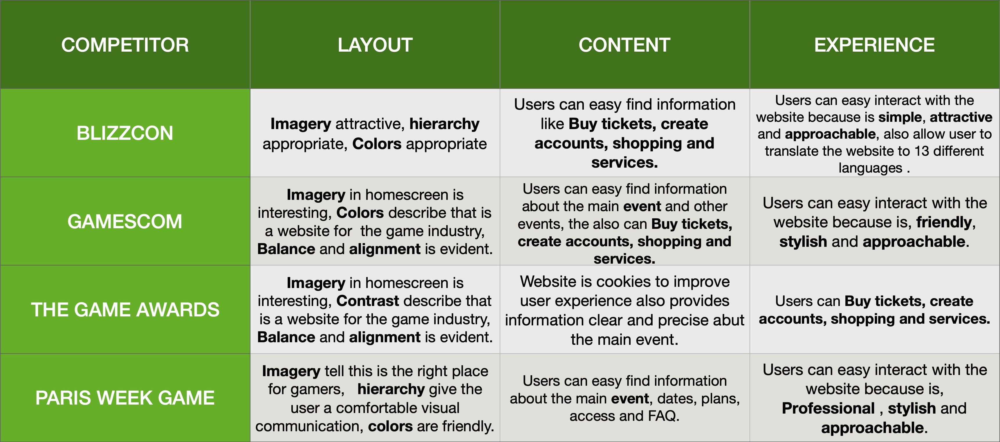
Summary of positive traits of competitor offerings.
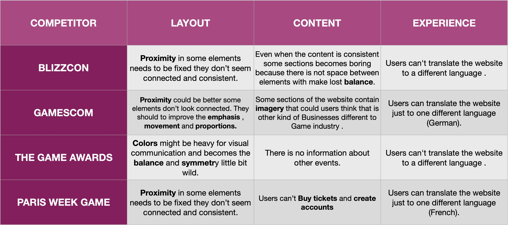
Summary of opportunities for competitor offerings.
Moodboards
Through the next moodboards I wanted communicate my concepts and visual ideas. It is a well thought out and planned arrangement of images, materials, pieces of text, etc. that is intended to evoke or project a particular style or concept.
Moodboard 1
The first direction I decided to go was with a focus on human reto video games, and the mood conveyed through the moodboard was appropriate for the target audience because it represents gamers, controlls, consoles, and the colors aaprocah the industry
Adjectives
Active
Adventurous
Collaborative
Moodboard 2
This moodboard represents E-sports, collaboration, challenge, and exciment. The adjectives used for this moodboard were:
Adjectives:
Professional
Impactful
Reflective
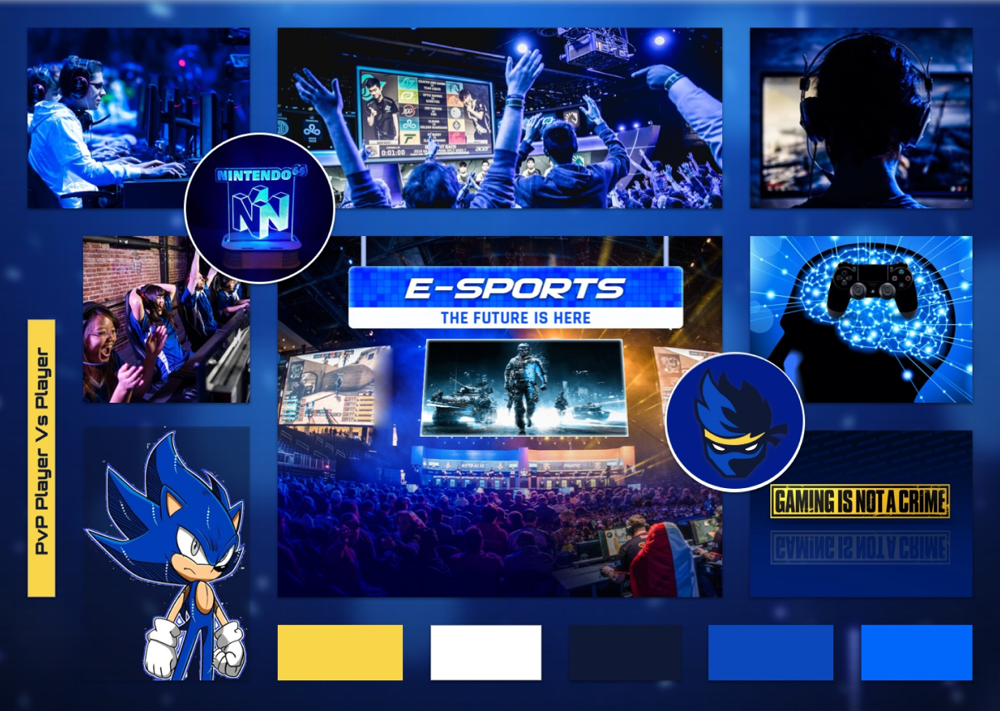
Style tiles
Combining fonts, colors, and interface elements helped me to communicate the essence of a visual brand of Diatom Impact. These style Tiles helped me to form a common visual language between me and the client to provide a catalyst for
discussions around the preferences and goals of the client.
Style Tile 1
The look and feel of this Style Tile are appropriate for the target audience because it represents education, opportunities inclusion, protection, gender equality.
Emotions
Hope
Kindness
Optimism
Adjectives
Modern
Natural
Collaborative
Style Tile 2
This Style Tile represents freedom of expression, and equality and inclusion and I decided to add the logo as an element to deliver professionalism:
Emotions
Enthusiasm
Enjoyment
Admiration
Adjectives
Professional
Impactful
Reflective
Style Tile 3
Represent women in tech, education. I decided to include the value propositions to make the concept feel more personal.
Emotions
Inspiration
Confidence
Happiness
Adjectives
Inviting
Friendly
Optimistic
Final Direction
Once the style tile was presented and approved by the client I had the direction to continue on my style tiles the style tile with major approval was:
Reasoning
The direction choosen was based on the layout and feel of the Style because is evoking the main pilar of Diatom Impact offering to users the human sense for the goals that the company is approaching, The values preposition header keep having special place to make sense of what the company is trying to do, CTA’s are giving the option to know better what Diatom Impact offers.
Interview Round 1 (style tiles)
Interviews will give us insights into what users think about a site, an application, a product, or a process. They can point out what site content is memorable, what people feel is important on the site, and what ideas for improvement they may have. For these interviews we wanted:
to inform personas, journey maps, feature ideas, workflow ideas
to enrich a contextual inquiry study by supplementing observation with descriptions of tools, processes, and how users perceive the Style Tiles
to collect verbal responses related to observed behaviors.
Interviews help you gain a deeper understanding of people’s behavior and their reason why they do what they do.
For this round, we interviewed a total of user provided By the client who are associated with:
Foundations
CSR departments with interest in international activities
International development agencies
Insights
(click the image above to see in detail the feedback gathered from users)
Users find my style Tiles with clear Layout, the Style Tile B was well received and approachable they find the design easy to understand, they love the hero image, good contrast and bold, the use of UI elements ( Icons and CTA’S) could be displayed in a way that users can understand, the headers need to be used in Sans Serif, the body text was readable the Style tile C was found unclear and hard to understand, the information given wasn’t enough for participants, Different styles in one page could be distracted, the hero image is nice, the information displayed was unclear, the contrast and balance between elements are good.
Analyzing wireframes
Our client provided us the wireframes used for the actual website, Based on this we had the start point to design our first round of design concepts.
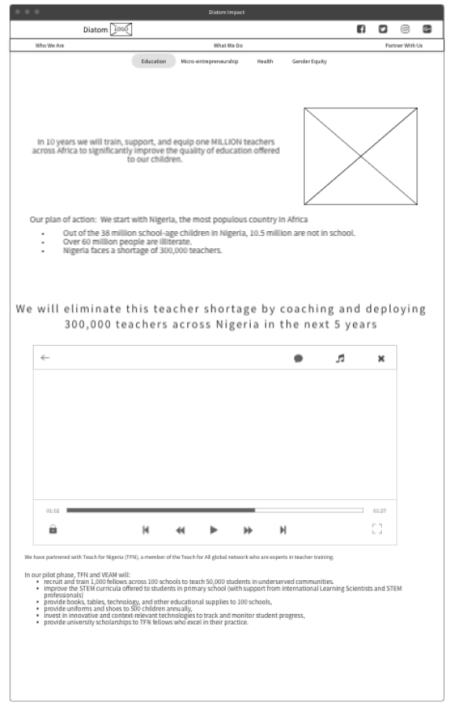
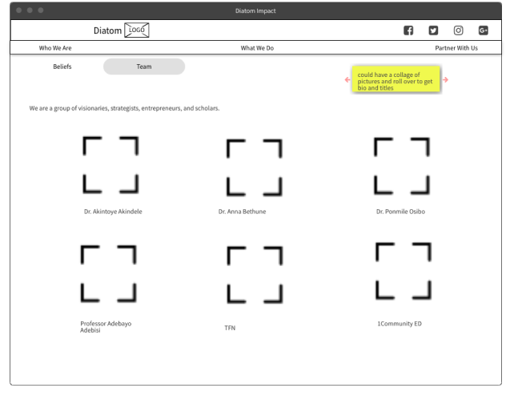
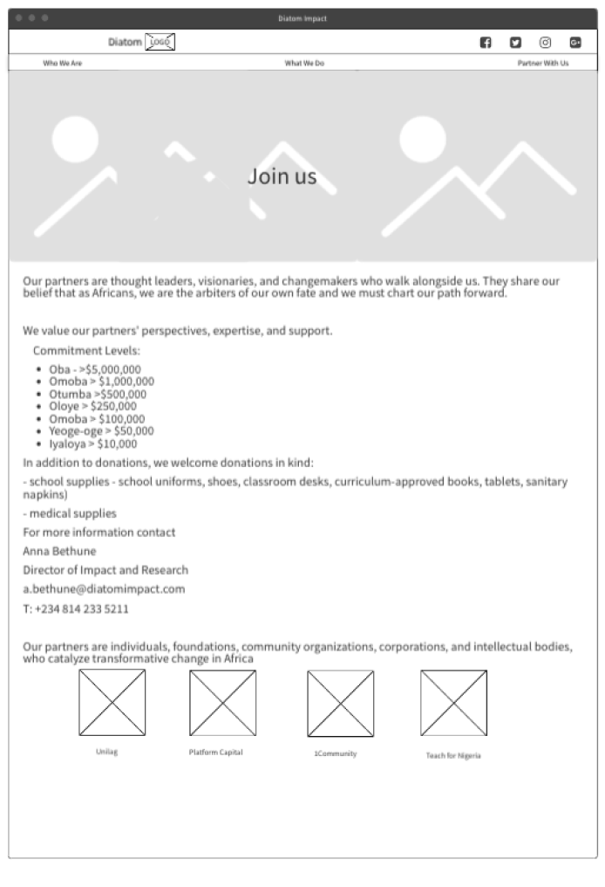
Insights
Analizing the sireframes was a key in the process to understand the content that our client wanted to deliver to her users all over the website this analisis help us to understand who Diatom Impact are and the message that wants to bring to potential users.
The challenge of this wireframes was that mostly of the content was text, the architecture of UI elements was missing in big portions of the screens, so that we think to re-do part of the wireframes.
Round 1
At this point, and based on the feedback gathered from the style tiles I determined to follow a single design direction and create hi-fidelity designs of the current product state adding visuals that speak a cohesive design language and add significant value to the user experience.
Screens
Using the brand colors I incorporate different elements to approach our users with photography, iconography, CTA’s and facts that eventually will inform juicers what Diatom Impact does.
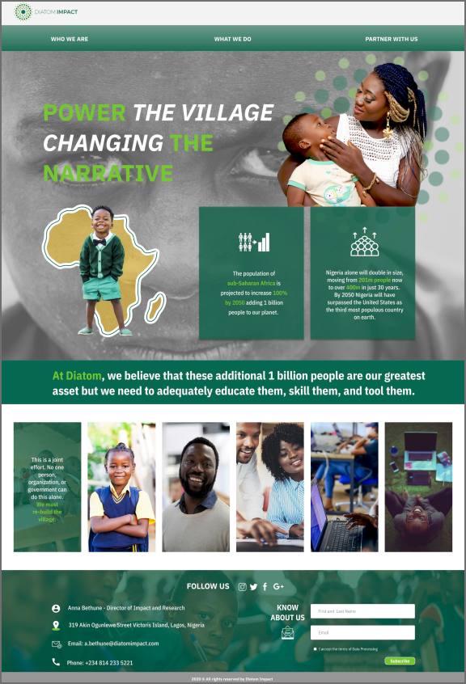
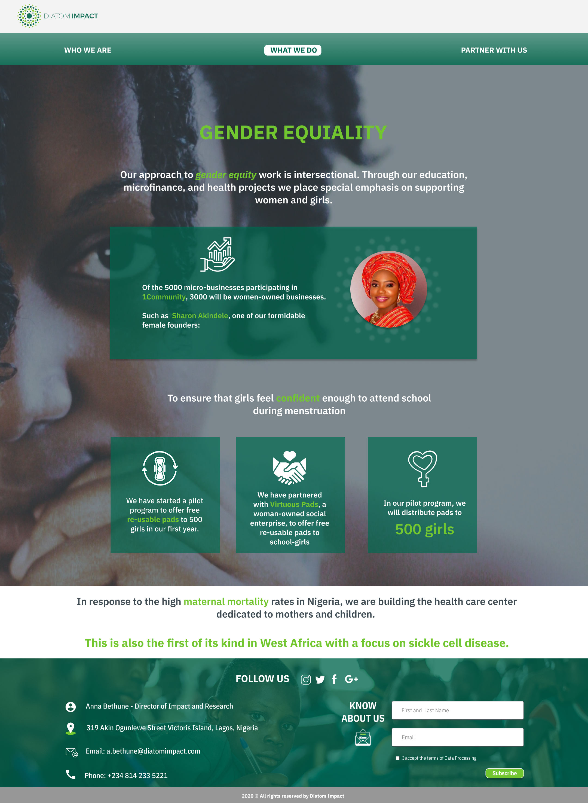
Prototype
Interview
Interviews will give us insights into what users think about a site, an application, a product, or a process. They can point out what site content is memorable, what people feel is important on the site, and what ideas for improvement they may have. For these interviews, we will get feedback from users about our first round of Hi Fidelity Designs.
(click the image above to see in detail the feedback gathered from users)
Insights
With a total of 6 interviews I got positives feedbacks and opportunities to make interactions on my design.
Top Positives
Heavy
Many styles
Improve the hierchary
Top Opportunities
Photography (treatment and use)
Icons (intuitive and clear)
CTA’s (clear to now where to go)
High Fidelity & Prototype Round 2
Now that I’ve gained valuable user insight on my designs, I’ll want to make some research-backed design decisions in the form of iterations. The goal is to further develop and polish my existing designs in a way that establishes the visual aesthetic of the Diatom Impact. Each design decision and iteration was supported by solid reasoning, best practices, testing insights and project goals.
Screens
For this round of design the main iterations were focused on cleaning the design providing simplicity, Round 1 was overloaded with microinteraction that hid value information for users, that’s why the biggest improvements were based on hierarchy, balance and information clearly.
Prototype
Interview
Interviews will give us insights into what users think about a site, an application, a product, or a process. They can point out what site content is memorable, what people feel is important on the site, and what ideas for improvement they may have. For these interviews, we will get feedback from users about our first round of Hi Fidelity Designs.
(click the image above to see in detail the feedback gathered from users)
Insights
I got positive feedback and opportunities to make interactions with my design.
Top positives:
Photography: Treatment and use
Iconography informative
Clear Calls To Action
Blockers
The content keeps being a block on the process because users don't feel convinced to enroll into Diatom Impact, they want to learn more about the organization.
Top Opportunities
For the final design I decided to incorporate call the actions around the sections to give users the opportunity to learn more about Diatom Impact.
Final design
The Final design was presented with CTA’s around, this was crucial for users because make them feel that they had the opportunity to learn more about DIATOM IMPACT some users based on Nigeria feel that the imagery and used was accurate to understand what the organization does and the way to get involved as a user or as a investor.
Screens
Prototype
As a result of thedesign process, we were able to delivered our final designs to our client who happily approved our designs.
Design System
Logo
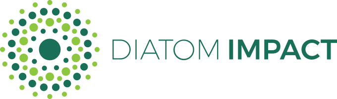
Color Palette
196F58
B9E295
F4BB03
3E4B52
Font Family
Headers (IBM Plex Sans Condensed Bold 46 px)
Subheaders (IBM Plex Sans Condensed Medium 24 px)
Body Text (IBM Plex Sans Condensed Regular 18 px)
Buttons
Partner with us
Donate now
Subscribe
Dropdowns
EDUCATION
HEALTH
MICRO ENTREPRENEURSHIP
GENDER EQUALITY
Iconography
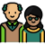
Conclusion
This project was very valuable to myself and I enjoyed working with a team of individuals to create a product for a Diatom Impact. Our client Anna was an absolute pleasure to work with and was very helpful every step of the way in
providing
the team with what we required or anything additional that we needed.
It was a great learning experience and our team grew and actively learned together, and from each other. We were also able to effectively adapt to the situations or roadblocks that we experienced in a timely and collaborative manner. We
worked extremely well as a team and I am very thankful for my team members. I learned a lot from them and from Flatiron School in general through this project, especially the instructors.


 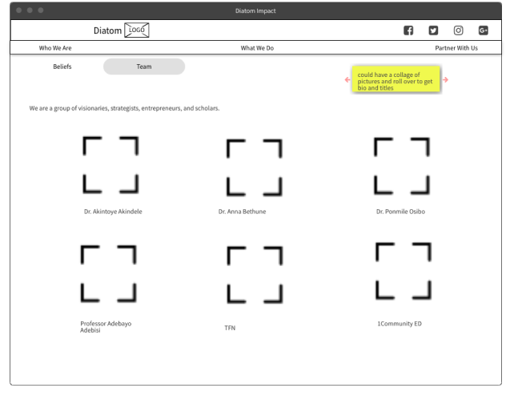
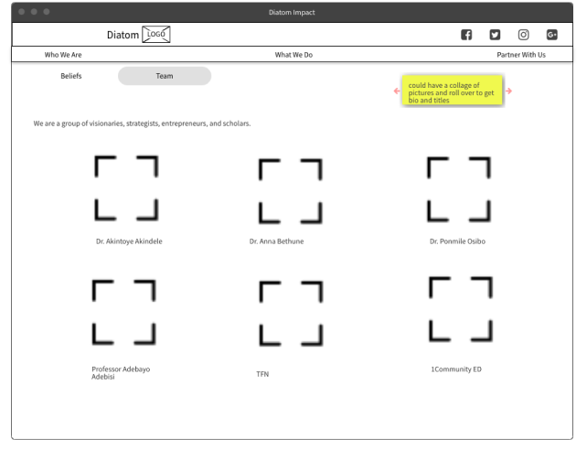
 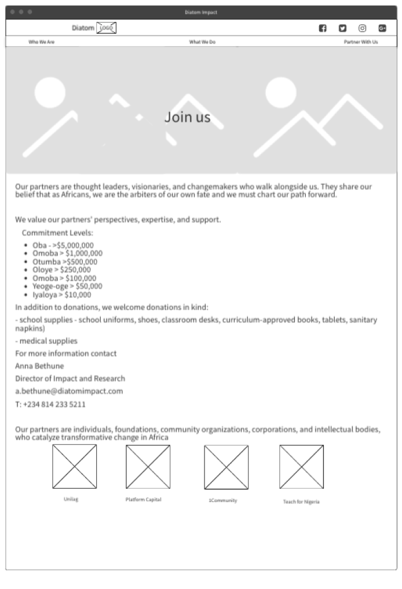
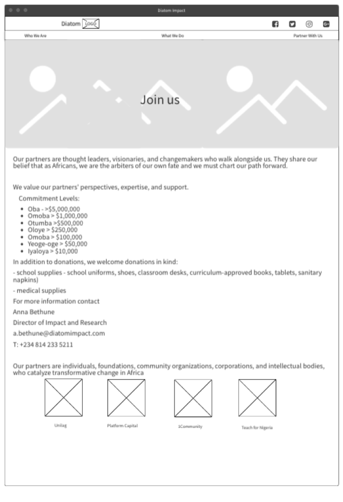